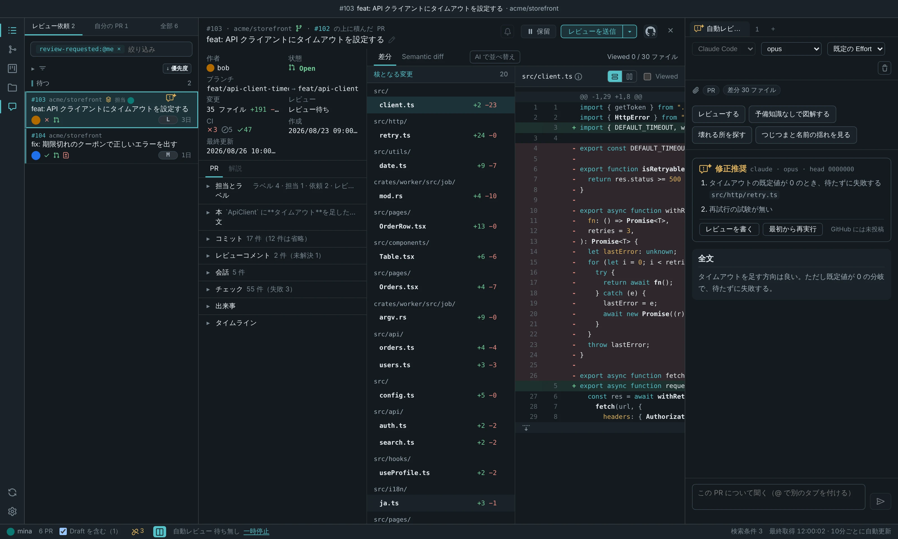

PR のレビューを、下ごしらえから手伝う。
Lythe は GitHub の PR をレビューする Mac アプリです。次に読む PR を示し、差分を変わったものごとにまとめます。Mac に Claude Code・Codex・GitHub Copilot CLI のどれかが入っていれば、それに PR をレビューさせることもできます。Lythe 自体は AI を持たず、API キーも要りません。
Apple Silicon の Mac 専用（Intel Mac では動きません）。ログイン済みの GitHub CLI が要ります。
curl -fsSL https://slashkiko.github.io/lythe-releases/install.sh | sh
ここで触ってみる
下の画面は、作り物のサンプル PR で動いている本物の Lythe の画面です。機能を選んで、そのまま押してみてください。AI の答えは、ここではあらかじめ用意したものです。
次に読む PR
自分が関わる PR を、リポジトリをまたいで1つの一覧にし、優先度の順に並べます。どれから開くかが分かります。
- 全部 タブを開きます。PR が 読む（自分のレビュー待ち）・動く（自分が動かす番）・待つ（ほかの人待ち）・静観（今は何もしなくてよい）に分かれて並びます。
- PR を押すと、右に中身が開きます。
- レビュー依頼 に替えると、頼まれた PR だけになります。
スタックをグラフで
ほかの PR のブランチを base にした PR（積み重なった PR）を1枚のグラフにします。これから読む PR の下に何があるかが見えます。
- #102 を押します。その積み重なりが光り、ほかの PR は薄くなります。
- 関連 PR のみ を外すと、ほかの PR が戻ります。
- PR にポインタを重ねると、その優先度になった理由が出ます。
Semantic diff
差分を関数や型ごとにまとめます。移しただけのコードは移動として出し、本当に変わった行だけを示します。AI ではなく構文の解析で行います。対象は TypeScript・Rust・Go・CSS と設定ファイル（JSON・YAML・TOML）で、それ以外はふつうの差分のままです。
- 右で withRetry を探します。別のファイルへ移ったうえで2行だけ変わっていて、その2行だけに色が付いています。
- 左の Orders を押すと、そのまとまりへ移ります。
- 上の 差分 に替えて、ふつうの差分と比べます。
AI で並べ替え
大きな PR を AI CLI が振る舞いごとに切り分け、その順で差分を出します。まとまりごとに短い説明が付きます。
- AI で並べ替え を押します。ファイルが、読む順のまとまりに分かれます。
- まとまりの横の ⓘ を押すと、何をなぜ変えたかが出ます。
- 元に戻す で、並べ替える前と比べます。
ここでは用意した答えが返ります。アプリでは、手元の AI CLI が分けます。
自動レビュー
設定でオンにすると、Lythe を開いている間、レビューを頼まれた PR を手元の AI CLI が優先度の順にレビューします。push されるとやり直します。結果は Lythe の中にだけ残り、GitHub には投稿しません。
- 自動レビュー タブに結果があります。判定と、その理由です。
- 下へ送ると、レビューの全文があります。
- GitHub には何も投稿していません。送るかどうかは自分で決めます。
このレビューは用意したものです。アプリでは、手元の AI CLI が書きます。
別の AI に確かめさせる
1つの AI CLI に聞いた答えを、別の AI CLI に渡して確かめさせます。会話は同じ PR の中で別々のタブになります。
- 上のタブは別々の会話で、それぞれ別の AI CLI につながっています。
- いま開いているのは3つ目のタブです。2つ目で Claude Code が出した答えを、Codex が確かめています。
- 質問を打って ⌘Enter で送ります。
ここでは用意した答えが返ります。アプリでは、選んだ CLI が PR を読んで答えます。

入れ方
5分ほどです。
- 1
Lythe を入れる
ターミナルに貼り付けて実行します。/Applications に Lythe.app が入ります。
curl -fsSL https://slashkiko.github.io/lythe-releases/install.sh | sh.dmg から入れた場合は、Apple の署名が無いため、初めて開く前に1回だけ次を実行します。
xattr -dr com.apple.quarantine /Applications/Lythe.app - 2
GitHub CLI にログインする
Lythe は gh のログインで GitHub とやり取りします（PR を読む、送ると決めたレビューを送る）。トークンは毎回 gh から受け取り、保存しません。
brew install ghHomebrew が無いときは cli.github.com にほかの入れ方があります。
gh auth login - 3
Lythe を開く
自分が書いた PR、担当になった PR、レビューを頼まれた PR が、リポジトリを問わず並びます。ほかのリポジトリや条件を足すときは、設定（⌘ ,）の「対象と検索条件」を開きます。
- 4
AI CLI を入れる（任意）
Chat・AI で並べ替え・自動レビュー（オンにするまで動きません）は、Mac に入っている Claude Code・Codex・GitHub Copilot CLI のどれかを使います。1つを入れてログインしておきます。Lythe は各 CLI の設定とアカウントのまま動かすので、使った分はその CLI の契約に数えられます。Lythe に API キーは入れません。
Lythe は自動では更新しません。更新するときは、メニューバーの Lythe › Check for Updates… を選びます。
うまくいかないとき
- 「“Lythe”は壊れているため開けません」と出る
- Apple の署名が無いアプリを macOS が止めています。
xattr -dr com.apple.quarantine /Applications/Lythe.appを実行してから開き直します。 - gh コマンドが見つからないと出る
brew install ghで GitHub CLI を入れ、gh auth loginを実行してから Lythe を開き直します。- 一覧が空
- 条件に当てはまる、開いている（open の）PR がまだありません。設定の「対象と検索条件」にリポジトリを足します。
入れたら、使い方で最初のレビューまでを順に見られます。